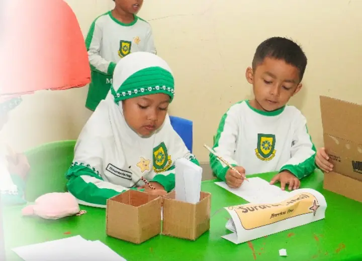
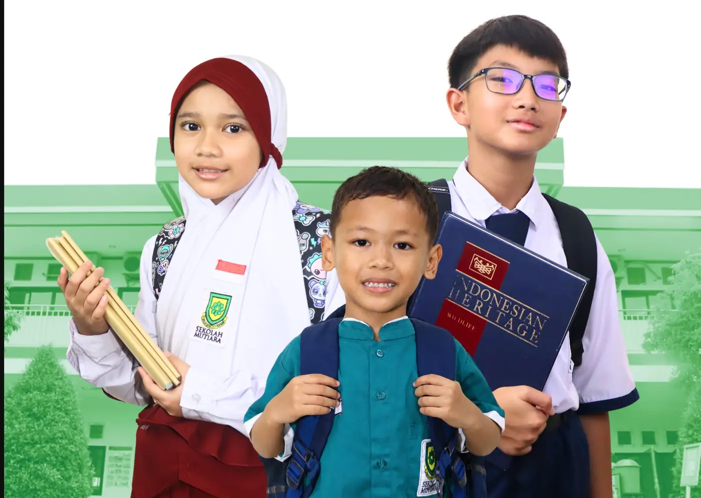
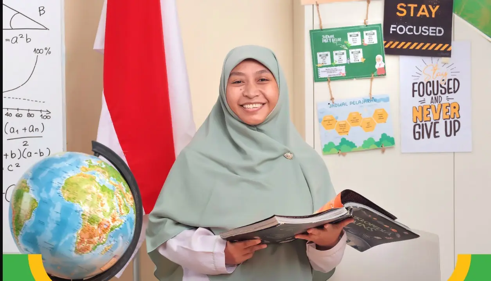
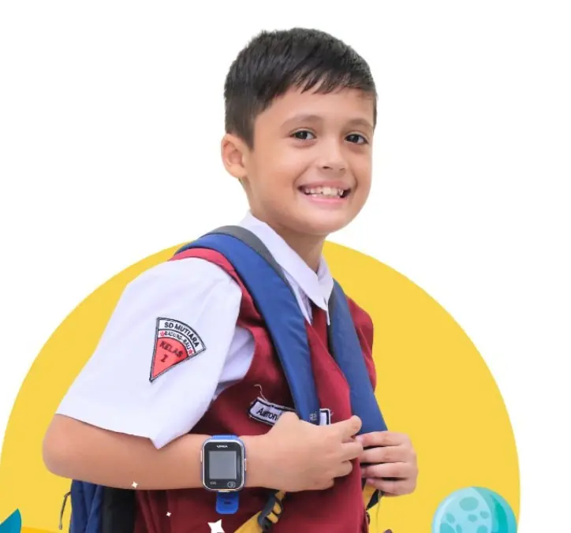
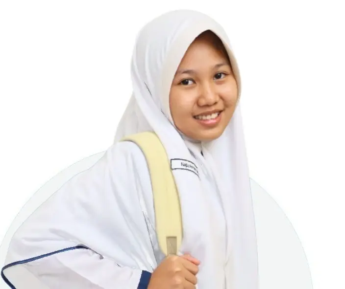
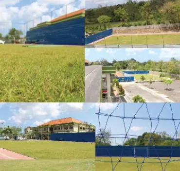
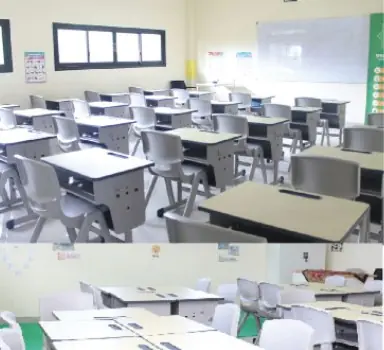

Narasi Akademik
Materi akademik dikemas dalam bentuk terapan yang berhubungan dengan penyelesaian masalah sehari-hari, sehingga siswa terlatih memimpin diri dan orang lain.
Selamat datang di
Cerdas · Berbudi · Visioner
Sekolah di Jimbaran, Bali untuk anak sejak kelompok bermain hingga SMP, tempat karakter, kepemimpinan, dan kemampuan berkomunikasi tumbuh bersama prestasi akademik.
Terakreditasi A (Unggul)
Seluruh jenjang pendidikan

Pendaftaran siswa baru 2027/2028 sudah dibuka Lihat cara mendaftar

Salam Selamat Datang
Pendidikan dini adalah salah satu pilar utama yang memengaruhi masa depan ananda. Mutiara School hadir dengan pendidikan karakter yang menuntun generasi muda kepada moral yang baik, dengan kepemimpinan dan keterampilan komunikasi sebagai bagian utama programnya.
Lailatul Widayati, S.H., M.Pd.Direktur Pendidikan
7 Alasan
Tenaga pendidik dan staf yang terlatih, berpengalaman, dan profesional di dunia pendidikan.
Program peningkatan kompetensi siswa dan pembiasaan menggunakan bahasa asing.
Menggabungkan Kurikulum Nasional Indonesia dan Kurikulum Kekhasan Mutiara.
Sarana dan prasarana lengkap untuk anak dengan desain yang mutakhir.
Sistem yang memudahkan siswa dan wali siswa mengakses pendaftaran, akademik, dan pembayaran.
Mempersiapkan generasi yang cerdas, berbudi luhur, dan berdaya saing global.
Program menghafal dan memahami isi Al-Qur’an agar menjadi pedoman dalam keseharian.
Jenjang Pendidikan
Seluruh jenjang terakreditasi A (Unggul) dan menerapkan sistem full day school.
 Usia 3–5 tahunPAUD MutiaraKB · TK A & TK BBermain dan belajar dengan model pembelajaran Sentra (BCCT).Selengkapnya
Usia 3–5 tahunPAUD MutiaraKB · TK A & TK BBermain dan belajar dengan model pembelajaran Sentra (BCCT).Selengkapnya 
Mulai usia 6 tahunSD MutiaraKelas 1–6Cerdas spiritual, akademik, dan sosial, dengan bahasa Inggris aktif.Selengkapnya
Lulusan SDSMP MutiaraKelas 7–9Kepemimpinan, riset, dan literasi untuk remaja yang percaya diri.SelengkapnyaProgram Unggulan

Materi akademik dikemas dalam bentuk terapan yang berhubungan dengan penyelesaian masalah sehari-hari, sehingga siswa terlatih memimpin diri dan orang lain.

Kegiatan berkala untuk mengembangkan bahasa Inggris secara aktif dan menyenangkan, bekerja sama dengan FEE Center (Future English Education Center).

Tahapan untuk melatih kemampuan berpikir logis, analitis, dan kritis serta menguasai dasar metode dan keterampilan ilmiah sesuai tahap perkembangan siswa.

Program peningkatan minat baca dan literasi untuk menambah keterampilan dan ilmu pengetahuan.

Program kepemimpinan yang terintegrasi dalam pembelajaran, ekstrakurikuler, dan organisasi siswa seperti OSIS dan Pramuka.

Wadah belajar orang tua tentang pendidikan dan anak, diasuh oleh para praktisi parenting.
Prestasi
…dan masih banyak lainnya.




Testimoni

“Sekolah Mutiara merupakan wadah yang tepat bagi ananda untuk tumbuh dengan nilai-nilai yang berbudi luhur, berpikir secara kritis dan visioner, dan berdaya juang tinggi sehingga mampu menjadi mutiara-mutiara bangsa di masa depan.”
“Sekolah Mutiara dapat memberikan bekal pendidikan moral yang baik, dan mendukung minat dan bakat ananda melalui program-program inspiratif. Kami merasa Sekolah Mutiara adalah “Second Home” bagi Ananda Miracle dan Maqdis. Selama menempuh pendidikan di sini, kami menemukan perkembangan ananda dalam peningkatan kedisiplinan dan mempunyai self-responsibility dalam belajar.”

“Saya suka dengan lingkungan Sekolah Mutiara. Dari kebersihan, teman-teman, dan suasana pembelajaran di kelas. Ustaz dan Ustazah juga sangat responsif dan penuh perhatian saat mengajar. Sehingga, ketika saya mengalami kesulitan dalam memahami suatu pembelajaran, saya tidak takut untuk bertanya dan mengekspresikan pendapat saya.”
Pendaftaran
One Day Service
Pendaftaran siswa baru 2027/2028 sudah dibuka.
Anak ingin belajar di Mutiara School?
Jadi siswa Mutiara School
Educational Partnership


Hubungi Kami
Mutiara School berlokasi strategis dan nyaman di kawasan pariwisata dan lingkungan pendidikan kampus Bukit Jimbaran.
Jl. Lingkar Timur Udayana No. 8, Desa Jimbaran, Kec. Kuta Selatan, Kab. Badung, Bali 80361
Senin – Jumat, 08.00 – 15.00 WITA